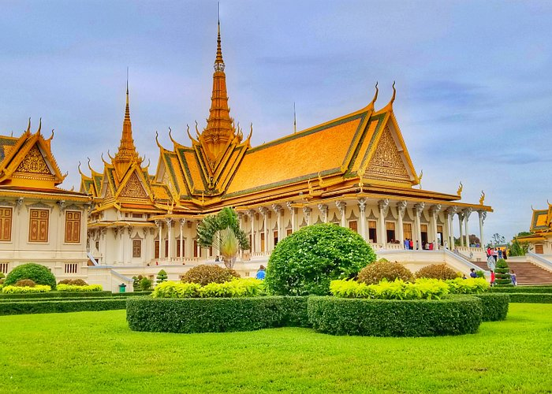

Phnom Penh
Phnom Penh is the vibrant bustling capital of Cambodia. Situated at the confluence of three rivers, the mighty Mekong, the Bassac and the great Tonle Sap, what was once considered the 'Gem' of Indochina. The capital city still maintains considerable charm with plenty to see. It exudes a sort of provincial charm and tranquillity with French colonial mansions and tree-lined boulevards amidst monumental Angkorian architecture. Phnom Penh is a veritable oasis compared to the modernity of other Asian capitals. A mixture of Asian exotica, the famous Cambodian hospitality awaits the visitors to the capital of the Kingdom of Cambodia.
Here in the capital, are many interesting touristy sites. Beside the Royal Palace, the Silver Pagoda, the National Museum, the Toul Sleng Genocide Museum, the Choeng Ek Killing Fields and Wat Phnom, there are several market places selling carvings, paintings, silk, silver, gems and even antiques. Indeed, an ideal destination for a leisurely day tour. The whole area including the outskirts of Phnom Penh is about 376 square kilometres big. There are currently 2,009,264 people living in Phnom Penh.
The city takes its name from the re-known Wat Phnom Daun Penh (nowadays: Wat Phnom or Hill Temple), which was built in 1373 to house five statues of Buddha on a man made hill 27 meters high. These five statues were floating down the Mekong in a Koki tree and an old wealthy widow named Daun Penh (Grandma Penh) saved them and set them up on this very hill for worshiping. Phnom Penh was also previously known as Krong Chaktomuk (Chaturmukha) meaning "City of Four Faces". This name refers to the confluence where the Mekong, Bassac, and Tonle Sap rivers cross to form an "X" where the capital is situated.
Phnom Penh is also the gateway to an exotic land - the world heritage site, the largest religious complex in the world, the temples of Angkor in the west, the beaches of the southern coast and the ethnic minorities of the North-eastern provinces. There are also a wide variety of services including five star hotels and budget guest houses, fine international dining, sidewalk noodle shops, neighbourhood pubs international discos and more.
Phnom Penh, like other Asian-City tourist destinations, is in the midst of rapid change. Over the past few years the number of restaurants and hotels have grown considerably and in the last year there had been a huge increase in the number of visitors. Come and see a real original as it won't be the same in a few years.
Royal Palace
Gleaming in gold, the Royal Palace is one of Phnom Penh?s most splendid architectural achievements. It is home to His Majesty Preah Bat smdech Preah Norodom Sihanouk and Her Majesty Preah Reach Akka-Mohesey Norodom Monineath. The palace was built in 1866 by His Majeaty Preah Bat Norodom, great grandfather to our current King. The Royal Palace is built on the site of the old town. This site was especially chosen by a Commission of Royal Ministers and Astrologers because it had great geographical significance in relation to the King, who was regarded as a direct descendant of the gods, whose role it was to live and govern on earth under the influence of heaven.
The Royal Palace contains some spectacular buildings. Not least of which is the Throne Hall, situated to the left of the main entrance. It boasts a 59-meter tower. The tower roof is beautiful, having been decoratively tiered with golden coloured tiles. This building is used for high official celebrations, coronations and audiences with foreign dignitaries and government officials.
The Roy al Treasury and the Napoleon II villa lie south to the Royal Throne Hall. North to this stands the Silver pagoda enclosure, otherwise known as the Pagoda of the Emerald Buddha. The Pagoda's steps are crafted from Italian marble, and within the throne room the regal floor consists of more than 500 solid silver blocks. If calculated together, they weigh nearly six tones. Displayed a round the room, surrounding the main area, stand plush presents from foreign dignitaries.
The magnificent 17th century emerald Buddha statue is made of Baccarat cuystal and solid gold. It weighs 90 kilograms and is adorned with 9,584 diamonds. Bronze statues stand to it?s left and right sides. Next to these, encased under a glass cover, reside a golden locus. Within this area other ancient treasures include a large Buddha?s footprint, representing the 108 past lives of the Buddha before he was re-incarnated as Prince Siddharta, who subsequently gained enlightenment. On the wall, surrounding the Pagoda compound, (the oldest par of the palace) are hundreds of meters of frescos depicting an episode of the Indian epic Ramayana. These are the biggest mural frescos in South East Asia.
The Royal Palace sits between streets 184 and 240. The main entrance is situated on Samdech Sothearos Boulevard via the Pavilion of Dancers. Opposite the entrance sits another almost equally stunning Royal spectacle. The Royal Residence, along with their Royal Highnesses, houses the sacred white elephant, the most auspicious and reverd symbol of royal beneficence within Cambodia.
Independence Monument
An Angkorian style tower, the inimitable place in the whole city, located in the heart of the capital. It was built in 1958 to Sybilles Cambodian Independence Day after winning back their independence from the French protectorate on the 9th of November 1953. The monument attracts many tourists for its peculiar looking but unique style distinguishes it from all the buildings in the city. It is also used as a memorial place dedicated to the Cambodian's patriot who died for the country.
The Independence Monument (Vimean Ekareach) was inaugurated on November 9, 1962 to celebrate the independence from the French in 1953, but now also serving as a cenotaph to Cambodia's war dead. The 20-meter high monument was designed by Cambodian architect, Vann Molyvann, and is shaped in the form of a lotus, which also can be seen at Angkor and other Khmer historical sites. You are not allowed to enter the monument. At night it is lit with blue, red and white light (the colours of the national flag) and it should be an impressive sight - but I didn?t see it.
There is a big open park at the Independence Monument and it seems to be a popular place among the locals. Smacked right at the corner of Norodom and Sihanouk Blvd, this piece of landmark is hard to miss. I took a nice picture of this piece but be careful because it is located in the middle of a roundabout.The monument was built in 1962 to celebrate Cambodia's independence from the foreign rule. It also serves as a monument to Cambodias war dead. It is the site for celebrations and services.When walking around in the city of Phnom Penh, have a look on the Independence Monument,10 minutes walking behind the Royal Palace.
It is surrounded by very large parcs and fountains and the monument itself is not the most impressive in the city. The Independence Monument in Phnom Penh, capital of Cambodia, was built in 1958 following the country's independence from France. It stands on the intersection of Norodom and Sihanouk Boulevards in the centre of the city. It is in the form of a lotus-shaped stupa, of the style seen at the great Khmer temple at Angkor Wat and other Khmer historical sites.The Independence Monument was inaugurated in 1958 to celebrate Cambodia's independence from foreign rule, now it also serves as a monument to Cambodia's war dead. At night the monument is illuminated by red, blue and white floodlights, the colors of the Cambodian flag. It is the site of celebrations and services on holidays such as Independence Day and Constitution Day.
National Museum

The National Museum of Cambodia houses one of the world's greatest collections of Khmer cultural material including sculpture, ceramics and ethnographic objects from the prehistoric, pre-Angkorian, Angkorian and post-Angkorian periods. The Museum promotes awareness, understanding and appreciation of Cambodia's heritage through the presentation, conservation, safekeeping, interpretation and acquisition of Cambodian cultural material. It aims to educate and inspire its visitors. Some highlights include the eight-armed statue of Vishnu from the 6th or 7th century, the statue of Shiva (circa 877-866) and the sublime statue of Jayavarman VII seated (circa 1181-1218), his head bowed slightly in a meditative pose.
Elsewhere around the museum are display of pottery and bronzes dating from the pre-Angkor periods of Funan and Chenla (4th to 9th centuries), the Indravraman period (9th and 10th centuries), the classical Angkor period (10th to 14th centuries), as well as more recent works. The National Museum of Cambodia is housed in a graceful terracotta structure of traditional design (built 1917-20) just north of the Royal Palace. It is located on street 13 in central Phnom Penh. The visitors entrance to the compound and the admissions ticket booth are at the corner of streets 13 and 178. Opening hours are from 8.00am until 5.00pm daily. Last admission tickets are sold at 4.30pm. Admission costs are US$5 for foreigner ages from 10 to 17 years old, US$10 foreigner ages from 18 years old up , 500 Riels for Cambodians. Children and school groups are free. Guided tours can be arranged for individuals or groups at the museum entrance. Tours are available in Khmer, English, French and Japanese. Photography is not permitted within the museum galleries, but visitors are welcome to film or photograph the museum exterior and courtyard. Those wishing to obtain images of the museum or collection for study or Publications should email the museum to request an application form or contact a staff member. Smoking is not permitted inside the museum. The Museum store is located at the main entrance. Postcards, souvenirs, replica sculptures and books on a variety of art and culture topics are available. Cloakroom facilities are available at the main entrance. Please leave large items and bags here. Bathrooms are located downstairs near the main entrance. See the map overleaf for detail see map overleaf for details. Donations to the museum are greatly appreciated and contribute to operating costs, programmes to protect Cambodian heritage and museum maintenance. Donation boxes are located near the main entrance, or contact a member of staff.
Toul Sleng Museum

In 1975,Tuol Svay Prey High School was taken over by Pol Pot's security force and turned into a prison known as Security Prison 21 (S-21) It soon became the largest such centre of detention and torture in the country. Over 17,000 people held at S-21 were taken to the extermination camp at Choeung Ek to be executed; detainees who die during torture were buried in mass graves in the prison grounds.
S-21 has been turned into the Tuol Sleng Museum, which serves as a testament to the crimes of the Khmer Rough. The museum's entrance is on the western side of 113 Street just north of 350 Street, Phnom Penh. The museum open daily from 08.00 am to 5.00 pm; ticket entry is 5USD for adult, 3USD for child from 8-10 years old and free of charge for child under 10 years old. The Audio Tour of the Tuol Sleng Genocide Museum is available many languages such as Khmer, English, French, Deutsch, Chinese, Japanese, Korean, Vietnamese, Spanish, Italian and Netherlands and it charges 3USD/person.
Like the Nazis, the Khmer Rough was meticulous in keeping records of their barbarism. Each prisoner who passed through S-21 was photographed, sometimes before and after being tortured. The museum displays include room after room in which such photographs of men, women and children cover the walls from floor to ceiling; virtually all the people pictured were later killed. You can tell in what year a picture was taken by the style of number board that appears on the prisoner's chest. Several foreigners from Australia, France and the USA were held here before being murdered. Their documents are on display.
As the Khmer 'revolution' reached ever-greater heights of insanity, it began devouring its own children. Generations of tortures and executioners and were in turn killed by those who took their places. During the first part of 1977, S-21 claimed an average of 100 victims a day. When Phnom Penh was liberated by the Vietnamese army in early 1979, they found only seven prisoners alive at S-21. Fourteen others had been tortured to death as Vietnamese forces were closing in on the city. Photographs of their decomposing corpses were found. Their graves are nearby in the courtyard.
Altogether, a visit to Tuol Sleng is a profoundly depressing experience. There is something about the sheer ordinariness of the place that make it even more horrific; the suburban setting, the plain school buildings, the grassy playing area where several children kick around a ball, rusted beds, instruments of torture and wall after wall of harrowing black-and-white portraits conjure up images of humanity at its worst. Tuol Sleng is not for the squeamish.
Wat Phnom
Set on top of a tree-covered knoll 27m high, Wat Phnom is the only hill in town. According to legend, the first pagoda on this site was erected in 1373 to house four statues of Buddha deposited here by the waters of the Mekong and discovered by a woman name Penh. The main entrance to Wat Phnom is via the grand eastern staircase, which is guarded by lions and naga (snake) balustrades. Today, many people come here to pray for good luck and success in school exams or business affairs. When a petitioner's wish is granted, he or she returns to make the offering (such as a garland of jasmine flowers or bananas, of which the spirits are said to be especially fond) promised when the request was made.
The vihara (temple sanctuary) was rebuilt in 1434, 1806 , 1894, and, most recently, in 1926. West of the vihara is an enormous stupa containing the ashes of King Ponhea Yat (reigned 1405 to 1467). In a small pavilion on the south side of the passage between the vihara and the stupa is a statue of the smiling and rather plump Madame Penh. A bit to the north of the vihara and below it is an eclectic shrine dedicated to the genie Preah Chau, who is especially revered by the Vietnamese. On either side of the entrance to the chamber in which a statue of Preah Chau sits are guardian spirits bearing iron bats. On the tile table in front of the two guardian spirits are drawings of Confucius, and two Chinese-style figures of the sages Thang Cheng (on the right ) and Thang Thay (on the left). To the left of the central altar is an eight-armed statue of Vishnu. Down the hill from the shrine is a royal stupa sprouting full-size trees from its roof. For now, the roots are holding the bricks together in their net-like grip, but when the trees die the tower will slowly crumble. If you can't make it out to Angkor, this stupa gives a pretty good idea of what the jungle can do (and is doing) to Cambodia's monuments. Curiously, Wat Phnom is the only attraction in Phnom Penh that is in danger of turning into a circus. Beggars, street urchins, women selling drinks and children selling birds in cages (you pay to set the bird free locals claim the birds are trained to return to their cage afterwards) pester everyone who turns up to slog the 27m to the summit. Fortunately its' all high-spirited stuff, and it's difficult to be annoyed by the vendors, who after all, are only trying to eke out a living. Wat Phnom Historical Site is open daily from 07:00 am till 06:00 pm and the entrance ticket is 1USD.